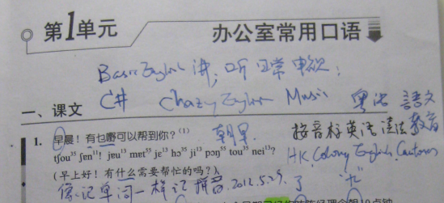

返回主页
学做广州人：粤语

大陆说港台用繁体字，台湾人自称正体字。很久以前，东亚自称大乘佛教（Mahayana），称东南亚的是小乘佛教（Hinayana）。然则，东南亚自称上座部佛教（Theravada）。
比如接二连三的粤语保卫战、反对残体字等。要做广州人，必须学粤语，说粤语。笔者推荐《广州话俗语辞典》。粤语和文化
不光粤语，普通话也要精通啊。还有英文、日语和德语。学语言可以当成一种乐趣和爱好。在菲律宾Donsol，跟德国人David学了点德语的发音，“鱼”和弹舌音（颤音）。想起那次在印尼看红毛猩猩时碰到的荷兰女孩，她会用德语数数。我发现，学语言从数数开始比较容易。幼儿园是先学数数，我先学粤语数数。所以，日语德语都从数数开始。然后是弹舌音（颤音），德语有两种弹舌音（颤音），derrrrrr和aherrrrr。到2013年5月23日，终于搞定德语发音。You will when you believe(Resonance, Secret)。
version:1.0; jobnet@188.com © retter2012.com